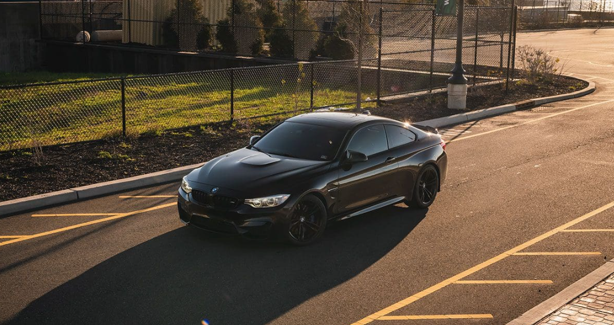

Gaming has been my greatest passion, deeply influencing my career aspirations throughout my life. Major influences like Riot Games, Rockstar Games, and Valve shaped my childhood and continue to be a cornerstone of my hobbies today. While most of my gaming experience centers around online multiplayer, I also enjoy exploring a wide range of single-player and local multiplayer games, spanning both classic and modern consoles.
10 years
Platinum 3
Favorite Champions: Draven and Vayne
6 years
Favorite Map: Mirage
4 years
Favorite Agent: Reyna
5 years
Favorite Game: Modern Warfare 2019
8 years
Favorite Game: Grand Theft Auto V
1 year
Favorite Class: GT4
Cars have been a lifelong passion of mine, sparked by my childhood obsession with Top Gear. Since turning 18, I have devoted countless hours to honing my skills as a car enthusiast, with a particular focus on BMWs. I learned everything from routine maintenance to major repair work, regularly participate in local track days and autocross events, and am an active member of various automotive forums, subreddits, and Discord communities. In my free time, I constantly research ways to enhance my knowledge and improve my cars. For me, cars are more than just a hobby, they are one of my biggest furfilling motivations in life.
